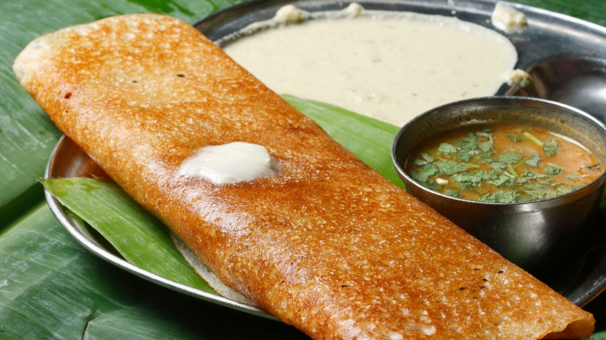

Dosa

Description
A dosa is a thin, savoury crepe in South Indian cuisine made from a fermented batter of ground black gram and rice.
Ingredients
- Raw Rice: 2 cups (preferably a mix of parboiled and raw rice, but you can use only raw rice too)
Urad Dal (Split Black Gram): 1/2 cup
Fenugreek Seeds (Methi Seeds): 1/2 teaspoon
- Salt: To taste
Water: As needed for grinding and fermenting
steps
- Soak the rice and urad dal in separate bowls for at least 4 hours. These will be later ground together to make a batter which ferments for 6 hours or more.
- Grind the soaked items separately. This is best done with a stone grinder, but a high powered blender can also do the job (although the batter will be somewhat more coarse in texture).[2]
Grind the soaked rice.
Grind the soaked urad dal.
- Mix the ground rice and urad dal together.
- Set aside in a warm place to ferment for 8 hours. Use a crock pot on the "keep warm" setting or an oven on the "proof" setting if you live in an area where the ambient temperature is below 75 °F (24 °C).
- Add salt.
- Oil the idli steamer plates.
- Spoon the batter into the plates.
- Set the idli steamer into a large, pre heated pot with water in the bottom for steaming.
- Steam the batter for 5-10 minutes or until fluffy.
- Remove the idlis from the steamer and serve warm with Chutney, or Sambhar.